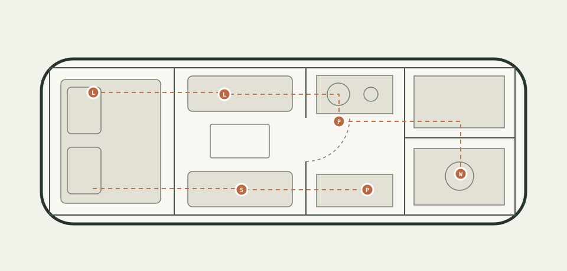

空间规划
功能分区、布局方案、动线与收纳规划。
空间、图纸与灵感，让每个想法有迹可循。
画廊内图像为设计示意或 AI 生成概念图，不代表真实项目。
房车空间有限，设计不能只停留在好看。我们从人的使用习惯出发，综合考虑功能分区、活动动线、设备安装与收纳细节，让空间、系统与美感相互配合。
以下为演示性概念方案，用同一空间展示不同图纸如何协同表达设计意图。它不是实际项目，也不能直接用于施工。

从卧眠、会客、厨房到卫浴，梳理功能分区与相邻关系；同时考虑通行、使用与储物。
① 睡眠区 ② 会客区 ③ 厨房区 ④ 卫浴区

围绕家具和实际使用动作，协调照明、开关、插座及给排水设备的位置。示意路线只用于表达设计思路。
L 灯位 S 开关 P 电源点位 W 水点

从侧向查看吊柜、台面、座椅和下柜的层次关系，辅助协调收口、材质与安装空间。
① 卧眠 ② 会客 ③ 厨房 ④ 卫浴
图纸、尺寸及系统配置须根据底盘、设备、法规和实际项目进行核对与深化。
 AI 生成概念效果图 · 非实际项目
AI 生成概念效果图 · 非实际项目以材质、光线和触感建立完整的车内体验。饰面、软装、照明与五金并不是最后的装饰，而是空间设计的一部分。
根据项目阶段和需求组合服务，交付范围与图纸深度在合作前明确。
功能分区、布局方案、动线与收纳规划。
风格方向、材质配色、照明氛围与效果表达。
平面、立面、剖面与关键家具节点表达。
灯具、开关、插座和水设备位置的空间协调。
填写基本信息，生成一份设计需求摘要。可复制或下载保存，方便后续沟通。
内容只在当前浏览器处理，不会自动发送或保存。
车型基础、使用人数、旅行方式、预算及目标。
梳理空间分区，讨论方案方向与功能取舍。
协调材质、家具、设备点位及关键空间关系。
按约定整理设计资料，供后续评审与实施沟通。